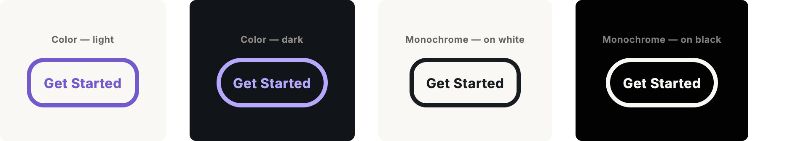
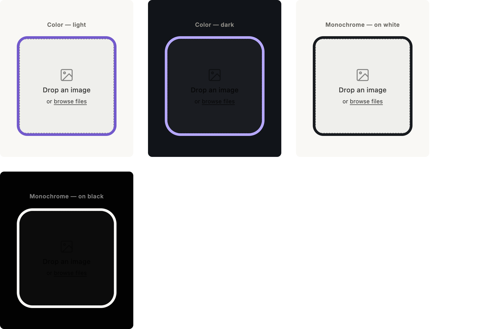
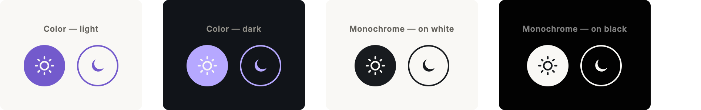
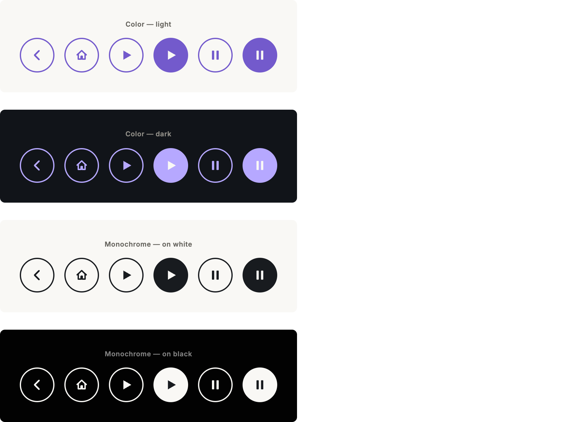

Proteus — UI Design System
Buttons, image tiles, and icons across 4 color treatments.
Treatments
| Treatment |
Primary |
Corner radius |
| Color — light | #735acc | 20px |
| Color — dark | #b6a8ff | 30px |
| Monochrome — on white | #181b1f | 20px |
| Monochrome — on black | #f9f8f5 | 30px |
"Light" treatments use 20px corners; "dark" treatments use 30px. Every component below draws its border, glow, and idle text/icon color from the treatment's primary color — there are no separate per-component colors.
Button

- Border: 5px solid, treatment primary. Corner radius: per treatment (20/30px).
- Padding: 15px around the label, centered horizontally and vertically.
- Idle: transparent background, label in the primary color.
- Hover/focus: 15px glow (box-shadow, 0 blur-offset, 15px blur, primary color) + 5% scale-up. No fill or text-color change.
- Font: Inter, weight 700, 16px, letter-spacing 0.02em.
Image tile
- Same border, radius, glow, and scale as the button. No padding between image and border, no text.
- With label: on hover/focus, a 60%-black scrim and a centered label (padding 15px) fade in over the image. Label color is the corresponding opposite treatment's primary — Color-light's label uses Color-dark's primary, and vice versa; monochrome labels use the opposite of their own primary.
- Label font: Inter, weight 700, 16px, letter-spacing 0.02em (matches the button).

Icon button
- Shape: 56px circle, 3px border in the primary color, transparent idle background, glyph in the primary color.
- Hover/focus: 15px glow + 5% scale, same as button/tile.
- Selected (sun, play, pause only): background fills solid with the primary color; glyph switches to a fixed contrast color so it stays legible against its own primary — off-white for Color-light, Color-dark and Monochrome-on-white; ink for Monochrome-on-black.
Light / dark mode — sun & moon
Sun: idle, hover, and selected (persistent fill, marks the active mode). Moon: idle and hover only (no selected state built yet).

Navigation & media — back, home, play, pause
Back and home: idle and hover only, no selected state (non-toggling actions). Play and pause: idle, hover, and selected, for marking the active transport state.

Files in this pack
icons/{treatment}/{icon}-idle.svg & .png
icons/{treatment}/{sun,play,pause}-selected.svg & .png
4 treatments × 6 icons, idle + selected where applicable.